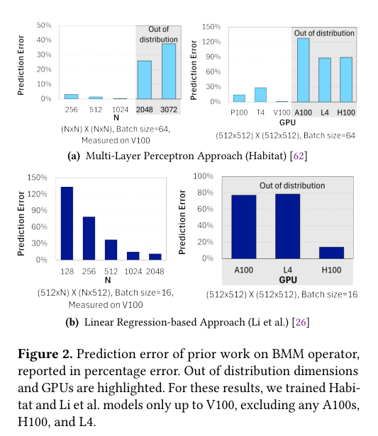
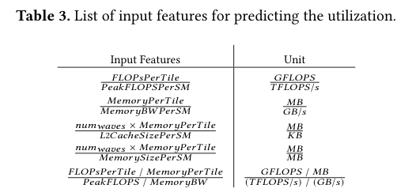
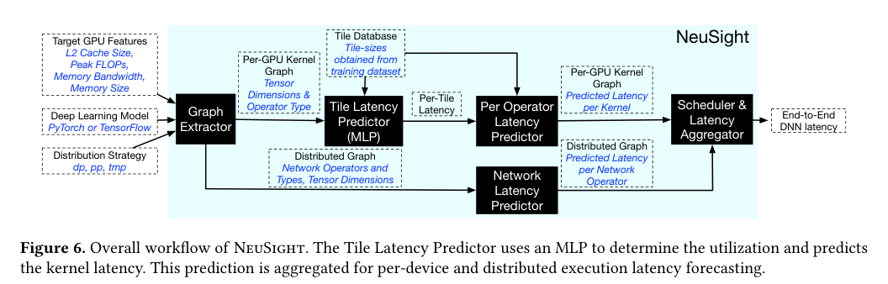
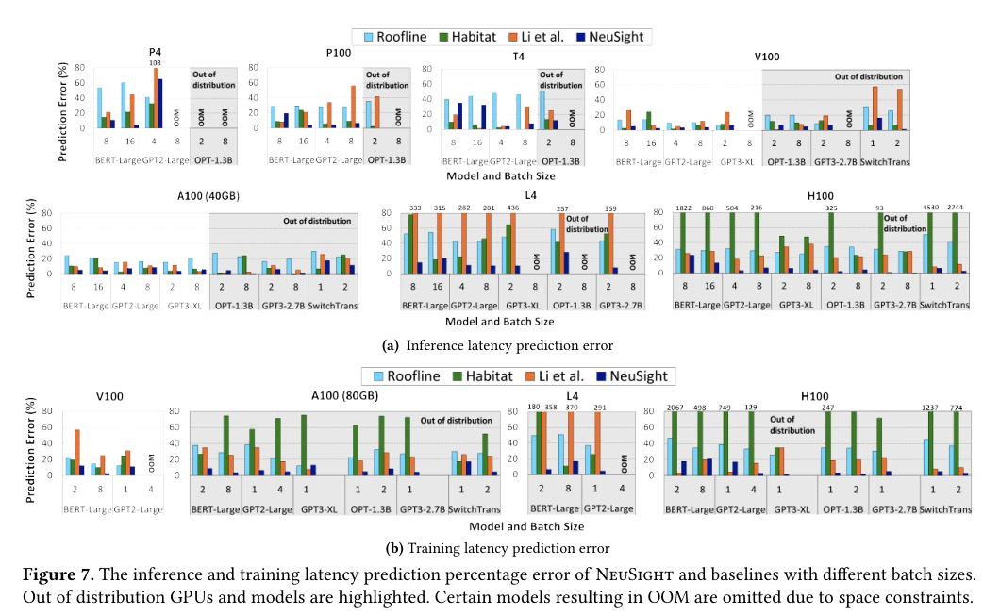
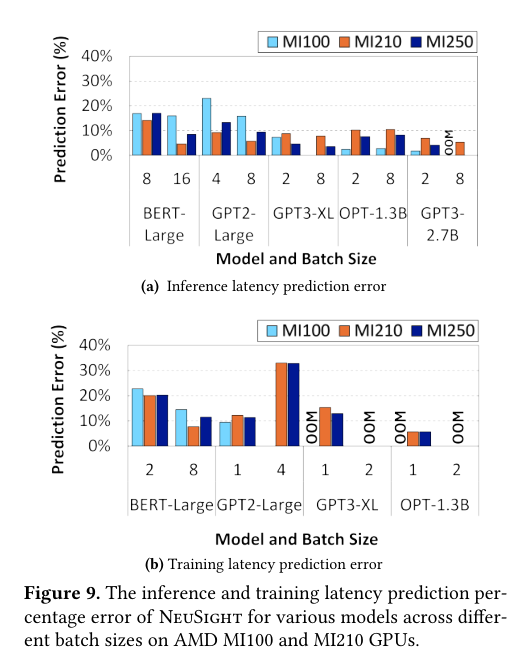
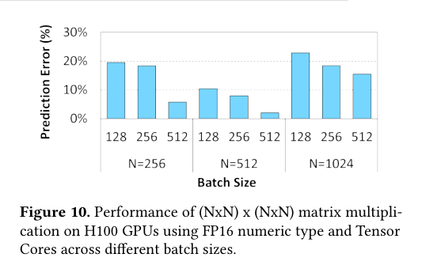
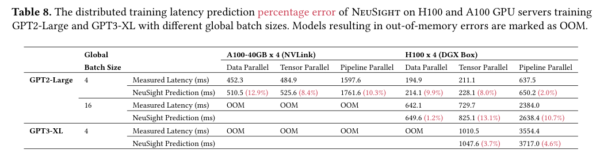
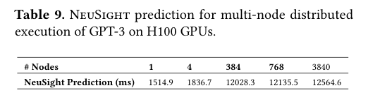

Seonho Lee, Amar Phanishayee, Divya Mahajan · Proceedings of the 30th ACM International Conference on Architectural Support for Programming Languages and Operating Systems, Volume 1 · 2025 · 原文 · PDF
本文提出了一种名为 NeuSight 的预测框架，旨在不依赖目标硬件实际执行的情况下，准确预测深度学习（Deep Learning, DL）模型在未知（全新或无法获取）图形处理器（GPU）上的训练和推理延迟。以下将按论文逻辑逐章节详细解析。
一、 引言（Introduction）与背景（Background）
1. 问题背景与系统全貌
在深度学习领域，模型规模（如 GPT-3 等大型语言模型）正呈指数级增长，而作为核心算力的 GPU 硬件（如 NVIDIA H100）也在不断迭代。然而，新型 GPU 往往极其昂贵或面临长达数月的交货期。这就引出了一个关键问题：如何在新 GPU 不可用时，准确预测现有或未来的深度学习模型在它上面的执行性能？
为了理解本文的预测对象，需要先建立 GPU 与深度学习执行的最小系统全貌 ：
流多处理器（Streaming Multiprocessor, SM） ：GPU 的核心计算构建块。一个 GPU 包含数十到上百个完全相同的 SM。每个 SM 拥有自己的指令调度器、计算核心以及极其快速但容量很小的 L1 缓存（一级缓存）。L2 缓存与片外内存 ：所有 SM 共享一个更大的 L2 缓存（二级缓存），L2 缓存再连接到片外的高带宽内存（High-Bandwidth Memory, HBM）或动态随机存取存储器（DRAM）。深度学习内核（Kernel） ：深度学习模型由多个层（如全连接层、卷积层）组成。在软件框架（如 PyTorch）和底层算子库（如 NVIDIA 的 cuDNN 或 CUTLASS）的调度下，这些层被分解为特定的“内核”（Kernel），例如通用矩阵乘法（GEMM）、元素级加法（Element-wise Add）或 Softmax 激活函数。本文中的内核定义为：一旦在设备上启动，就会在 GPU 上完整执行完毕的不可分割的张量操作。 数据从片外内存加载到 L2 缓存，再分配给各个 SM，SM 计算完成后将结果写回。本文的讨论正是聚焦于“内核”如何映射到“SM”这一软硬件交互层。
2. 现有方法的局限性（Motivation）
文章指出，现有的 GPU 性能预测方法存在严重缺陷。此前的研究主要分为两类：一是基于周期级别的硬件模拟器（Cycle-accurate simulators），这类方法需要对 GPU 的每一个微架构细节进行建模，仿真一个简单的 ResNet-50 模型可能需要数小时到数天，且每次推出新 GPU 都需手动更新模型，耗时过长；二是直接使用机器学习（如多层感知机 MLP 或线性回归）将 GPU 宏观特征（如总内存带宽、峰值算力）映射为内核延迟（如 Habitat 和 Li et al. 的工作）。
通过图 2 的实验，作者证明了直接使用机器学习预测整个内核延迟的方法在新模型和新 GPU 上会产生巨大的误差（如 Habitat 预测 GPT3 训练的误差高达 121.4%）。这是因为 GPU 的执行受到软件算子库优化（如分块执行）和硬件非线性调度（如线程束隐藏延迟）的双重复杂影响。简单地增加机器学习模型的层数（如引入 Transformer 架构）也无法解决超出训练分布外（Out-of-distribution）的泛化问题。

Figure 2 · 原文 PDF 第 3 页 二、 NeuSight 预测方法（NeuSight Forecasting）
为了解决上述泛化问题，NeuSight 放弃了直接用黑盒机器学习预测整体内核延迟的思路，转而将预测分解为更小的问题，并强制施加物理性能定律作为边界约束 。
1. 基于分块（Tile）的执行洞察
理解 NeuSight 的核心在于理解算子库是如何优化内核的。以通用矩阵乘法（GEMM）为例，现代算子库不会让 GPU 强行一次性计算庞大的输出矩阵，而是将其在逻辑上划分为多个相同的分块（Tile） 。
Tile 的定义 ：此处 Tile 并非指物理芯片上的芯粒（Chiplet），而是软件层面为了适配单个 SM 的 L1 缓存和寄存器大小，人为划分出的输出矩阵的二维计算子集（例如 128x128 的矩阵块）。（背景补充：将大任务切分为 Tile，可以确保所需数据驻留在高速的片上内存中，最大化数据复用，这是现代体系结构优化的基石）。波（Wave）的定义 ：这些 Tile 会被分发到 GPU 的各个 SM 上独立执行。由于 GPU 的 SM 数量有限，所有的 Tile 通常需要分批次执行。一批同时在所有可用 SM 上并行执行的 Tile 集合，在本文中被称为一个“波”（Wave）。
2. 物理性能定律约束（Roofline 模型）
GPU 的执行速度不能违背物理定律。NeuSight 引入了 Roofline 模型来计算内核的理论性能上限。首先定义以下公式中的基本物理与数学量：
对于任意深度学习内核 k
f l o p s k k m e m k k K K = f l o p s k m e m k p f l o p s p B W m e m B W p r o o f l i n e B W
公式 (1) 定义了理论上限：
r o o f l i n e B W = min ( K × m e m B W p , f l o p s p )
这意味着，如果算术强度 K K
3. Tile 粒度的预测模型（数学公式推导链）
NeuSight 将整个内核的延迟预测转化为对单个 Tile 延迟的预测，再乘以所需的波（Wave）数。后续公式依序定义如下：
N i 1 N x i i t i i t i l e s n u m t i l e s
公式 (2) 计算总 Tile 数：
n u m t i l e s = ∏ i = 1 N ⌈ x i t i ⌉
s m n u m s m w a v e s n u m w a v e s
公式 (3) 计算波的数量：
n u m w a v e s = ⌈ n u m t i l e s n u m s m ⌉
P e r T i l e L a t e n c y P e r O p L a t e n c y
公式 (4) 计算内核延迟：
P e r O p L a t e n c y = P e r T i l e L a t e n c y × n u m w a v e s
那么如何求得 P e r T i l e L a t e n c y
t i l e f l o p s t i l e a c h i e v e d B W u t i l i z a t i o n
公式 (5) 与 (6) 建立延迟与利用率的联系：
P e r T i l e L a t e n c y = f l o p s t i l e a c h i e v e d B W
a c h i e v e d B W = r o o f l i n e B W × u t i l i z a t i o n
最终的非线性问题落在如何预测 u t i l i z a t i o n 此时，机器学习终于登场。作者观察到，随着波的数量（n u m w a v e s
a l p h a b e t a M L P i n p u t _ f e a t u r e s σ
公式 (7) 和 (8) 定义了利用率的预测逻辑：
u t i l i z a t i o n = a l p h a − b e t a n u m w a v e s
a l p h a , b e t a = σ ( M L P ( i n p u t _ f e a t u r e s ) )
4. MLP 模型的设计选择
作者设计了包含 8 个隐藏层（每层 512 个神经元）和 ReLU 激活函数的 MLP。为了支持不同算子，针对矩阵乘法、全连接层、元素级操作、Softmax 和层归一化分别训练了 5 个专用的 MLP。对于未见过的罕见算子，则悲观地假设其完全受限于内存带宽来直接估算。
关键设计选择 ：为了让 MLP 能够泛化到不同 GPU，输入特征 i n p u t _ f e a t u r e s 每个 SM 的特征 （如表 3 所示：单 SM 峰值 FLOPS、单 SM 内存带宽、单 SM 的 L2 缓存大小等）。这与 Tile 映射到单一 SM 执行的物理事实严丝合缝。

Table 3 · 原文 PDF 第 8 页 三、 NeuSight 工作流与分布式执行扩展（Workflow & Distributed Execution）
文章图 6 展示了系统工作流：

Figure 6 · 原文 PDF 第 8 页
图提取 ：利用 PyTorch 的 torch.fx 库解析目标深度学习模型的计算图，提取出每一个内核及其张量维度。单设备预测 ：使用前述 Tile 预测模型，计算出每个内核的延迟。现代深度学习框架（如 PyTorch）为了减少显存读写，会进行算子融合（Operator Fusion） （例如将矩阵乘法和激活函数合并为一个内核）。NeuSight 在设计上支持这一特性，通过累加融合算子的 FLOPS 并丢弃中间结果的内存读写量来修正输入特征。预测出所有节点后，由于单 GPU 上内核是串行调度的，直接累加即可得到单卡端到端延迟。分布式执行预测 ：这是本文的扩展功能，用于预测单台服务器内多卡（如通过 NVLink 互联的 4 卡或 8 卡）分布式训练的延迟。作者根据用户提供的并行策略（数据并行、张量并行或流水线并行），在计算图中插入相应的网络通信算子（如 All-reduce 或 Send/Receive）。通信算子的延迟由目标系统的物理链路带宽直接解析计算得出，然后与单卡计算延迟结合。
跨层关系说明（关于体系结构与 EDA） ：
本文完全聚焦于“软件层面的深度学习模型”如何映射到“微架构层面的 GPU 计算/存储资源”以进行性能预测。文中所使用的架构参数（如峰值 FLOPS、带宽、L2 缓存容量）均来自公开的硬件规格，作为先验常量输入给代价模型（MLP）。本文未涉及 任何将这些性能指标反馈给电子设计自动化（EDA）工具以指导芯片布局、布线、时序或热分析的跨层协同优化。此类约束纯粹是“软件对已有硬件的适应”，而非“软件驱动硬件综合”。
四、 实验评估（Evaluation）
作者收集了包含 8 款 NVIDIA GPU 和 3 款 AMD GPU 的数据集。测试集特意保留了未参与模型训练的先进架构（如 NVIDIA H100 和 L4）以及未见过的大维度模型（如 GPT3-2.7B），以测试分布外泛化能力 。
1. 单设备执行结果
图 7 展示了核心实验结论：在不同模型和批处理大小下，NeuSight 的预测误差显著低于基线方法。

Figure 7 · 原文 PDF 第 11 页
纯粹使用解析理论（Roofline 分析）的平均误差在推理和训练上分别为 31.2% 和 31.9%。
此前基于纯 MLP 的最优基线（Habitat）在训练分布内表现尚可，但在未见过的 H100 和大模型上彻底崩溃，推理和训练的平均误差分别达到 220.9% 和 725.8%（在未见过的分布外 GPU 上，Habitat 的平均误差为 724.3%）。
相比之下，NeuSight 在推理和训练上的平均绝对百分比误差分别仅为 9.7% 和 7.3% ，在未见过的 GPU 上最大误差也仅限制在 28.2%。
结果说明 ：这一巨大提升归功于 NeuSight 的混合架构：它不让机器学习直接猜测复杂的整体延迟，而是用物理定律（Roofline）兜底，用底层软件逻辑（Tiling）拆解，仅让机器学习去拟合那个“平滑且有界的利用率曲面”。
2. 跨厂商与新硬件的适应性
图 9 验证了 NeuSight 在 AMD GPU（MI100, MI210, MI250）上的表现，推理和训练的平均误差分别保持在 8.8% 和 15.7%。这证明了本文的“Tile 映射到 SM”的核心假设反映了现代高度并行加速器的通用计算范式，而并非仅针对 NVIDIA CUDA 的过拟合。
此外，图 10 展示了当 H100 引入新的半精度（FP16）数据类型和特定的张量核心（Tensor Core）时，只要在输入特征中更新相应的峰值 FLOPS 和内存需求，NeuSight 依然能维持 13% 左右的平均误差率。

Figure 9 · 原文 PDF 第 12 页 
Figure 10 · 原文 PDF 第 12 页 3. 分布式执行结果
表 8 展示了服务器内部（如 4x A100 NVLink 或 4x H100 DGX Box）分布式训练的预测结果，平均误差约为 7.7%。这证明了通过准确预测单核延迟并叠加确定的网络通信开销，可以有效评估完整服务器的系统级性能。

Table 8 · 原文 PDF 第 13 页 五、 总结主线与局限性（Conclusion）
主线叙事 ：面对 AI 模型与硬件快速迭代导致“买不到新卡就无法评估新模型性能”的困境，本文发现直接用黑盒机器学习预测 GPU 这种具备复杂存储层次和编译优化的硬件注定失败。因此，作者顺应了算子库的底层设计逻辑，将宏观内核拆解为微观的分块（Tile），将预测目标从“绝对延迟”转换为“受制于 Roofline 物理上限的硬件利用率”，最终利用轻量级多层感知机（MLP）精确捕捉到了这种非线性映射，实现了一个能在完全未见过的下一代 GPU 上准确预测执行时间的框架（NeuSight）。
关键假设与局限性 ：
单流串行假设 ：模型（公式 4 及工作流描述）假设内核在单 GPU 上是严格串行执行的。这符合目前大多数深度学习框架的默认行为，但如果未来框架大量采用并发 CUDA Stream 执行多个不相关的微小内核，该累加预测逻辑将产生偏差。Tile 大小推断 ：预测依赖于获取或估计 Tile 的大小（t i 网络预测的局限 ：在分布式预测中（特别是表 9 中推算 3840 个节点的多机集群），由于资源限制，无法在如此规模的真实集群上验证此预测，因此其大规模集群的预测结论（表 9）不能被过度视为实际生产环境的绝对真理。
Table 9 · 原文 PDF 第 13 页